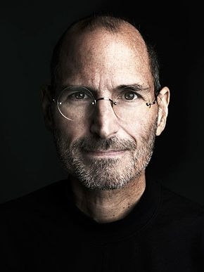

“The people who are crazy enough to think they can change the world are the ones who do.” - Steve Jobs
Apple Computer, Inc. was founded on April 1, 1976, by college dropouts Steve Jobs and Steve Wozniak, who brought to the new company a vision of changing the way people viewed computers. Jobs and Wozniak wanted to make computers small enough for people to have them in their homes or offices. Simply put, they wanted a computer that was user-friendly.
Jobs and Wozniak started out building the Apple I in Jobs' garage and sold them without a monitor, keyboard, or casing (which they decided to add on in 1977). The Apple II revolutionized the computer industry with the introduction of the first-ever color graphics. Sales jumped from $7.8 million in 1978 to $117 million in 1980, the year Apple went public.
Today, Apple is one of the largest companies globally with a market cap of over 2 trillion dollars.